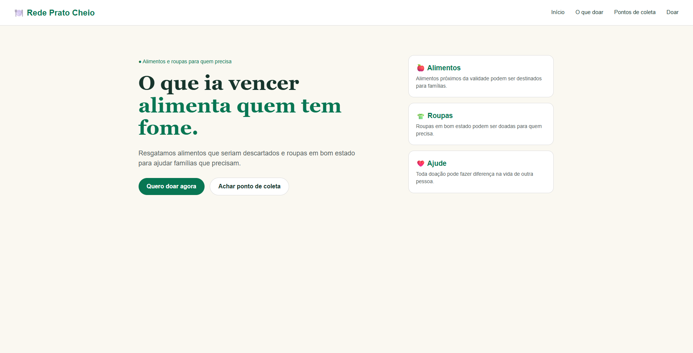

Imagens e referências
Galeria
A comunicação visual ajuda a explicar a proposta e a incentivar doações responsáveis.

Ideias para a próxima campanha
- Fotografar caixas organizadas de alimentos não perecíveis.
- Mostrar roupas limpas e separadas para doação.
- Registrar voluntários somente com consentimento.
Ao adicionar novas imagens, use arquivos leves, texto alternativo descritivo e registre a fonte ou autorização em /docs.